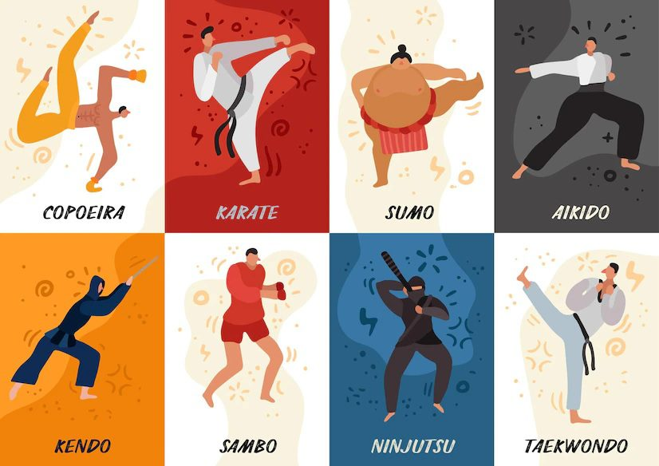

Lutas
O que são lutas? As lutas são caracterizadas pelo uso de técnicas de agarramento, derrubadas e golpes que podem ser realizadas por dois ou mais competidores. Existem diferentes estilos de lutas e elas podem variar conforme as regras.
As técnicas de lutas estão presentes nas artes marciais e também em sistemas militares. No campo dos esportes, ela é considerada a mais antiga modalidade, estando atrás apenas do atletismo.
As lutas foram originadas na busca dos seres por recursos para a sobrevivência. Não há uma data que estabeleça o início dessa prática, porém há marcas registradas nos povos egípcios e também na civilização babilônica. Há registros também de 15 mil anos atrás de desenhos nas cavernas da França, assim como nos povos de sumérios-acadianos no ano de 3000 a.C.
No Egito, por exemplo, há pinturas de lutas do período de 2.400 a.C. As lutas são mencionadas em importantes obras históricas como a “Ilíada” de Homero no século XIII e XII a.C. Essa prática passou a ganhar destaque com o passar dos anos e fez parte dos Jogos Olímpicos da Antiguidade em 708 a.c durante a Grécia Antiga.
A modalidade praticada na Grécia Antiga era o pancrácio, uma atividade que inclui técnicas, como: cotoveladas, socos, quedas, imobilizações, torções, joelhadas, além de outros golpes.
Os norte-americanos também possuem destaque quando se trata da história dessa modalidade de combate, pois essa prática fazia parte de atividades populares, militares e feiras realizadas por eles. A primeira vez que ocorreu um torneio no país foi em 1888, na cidade de Nova York. Em síntese, antes usada como recurso para sobreviver, a luta atualmente é utilizada para prática de exercícios, um esporte e artifício de defesa.
